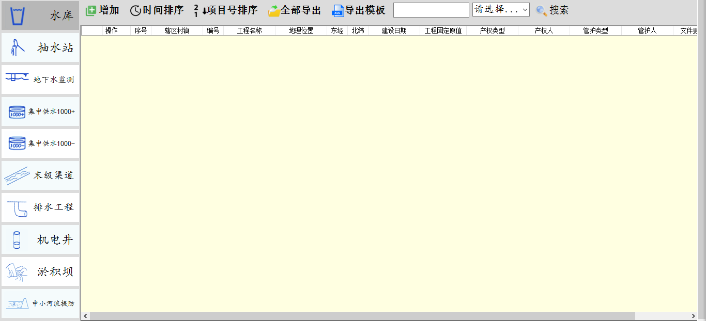

功能详细介绍：返回到首页
- ◆ 用户登陆
- 初始密码为：linwei，建议登陆后立即修改密码，若修改密码后多次登陆无法进入或忘记密码请联系Bird Group
- ◆ 欢迎界面
- ◆ 软件主界面
- ◆ 菜单栏
- ○ 退出：点击退出按钮安全绿色退出系统
- ○ 管理员：点击管理员按钮修改用户密码
- ○ 主题：点击主题按钮开启个性界面展示
- ○ 系统：点击系统按钮查看系统信息
- ○ 帮助：点击帮助按钮查看帮助文档
- ◆ 主操作界面功能区
- 
- ○ 工程列表：列出10项工程，每项操作相似
- ○ 添加项目文件：添加对应的工程下文件
- ○ 时间排序：按照项目建设日期排序
- ○ 项目编号排序：按照项目编号排序
- ○ 全部导出：导出当前工程下所有项目文件
- ○ 导出模板：导出当前工程模板文件
- ○ 全文搜索：选择对应搜索条件进行全文搜索
- ◆ 主操作界面项目列表区
- ○ 操作栏
- ○ 查看或更改：点击打开项目文件
- ○ 导出：点击导出项目文件

- ○ 删除：点击删除项目文件
- ○ 修改：点击修改项目文件基本信息
- ○ 配图：点击对项目文件配图操作